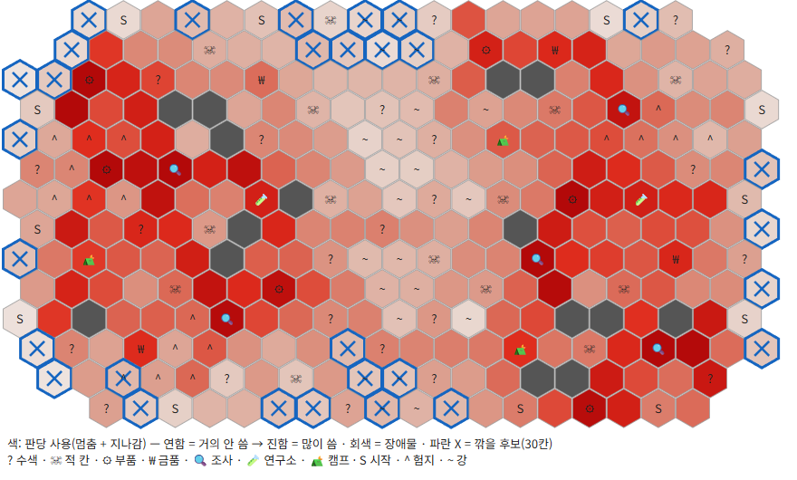
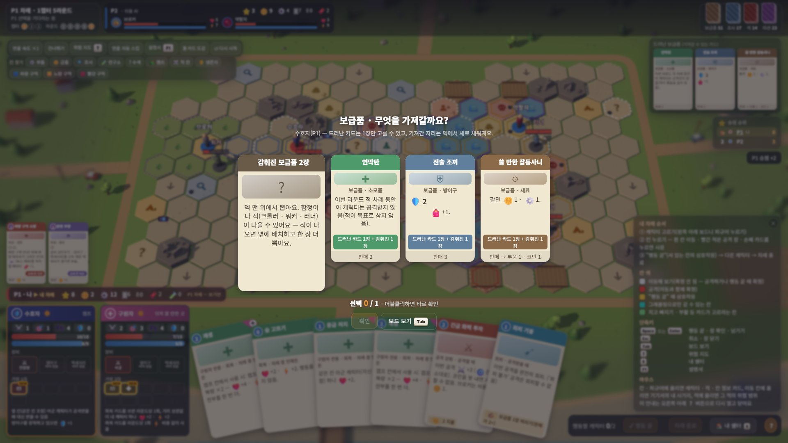
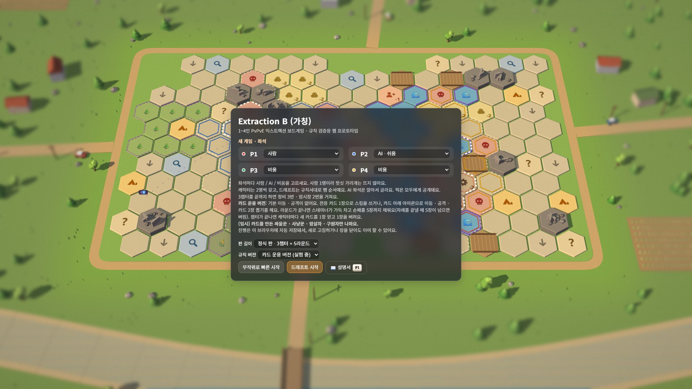
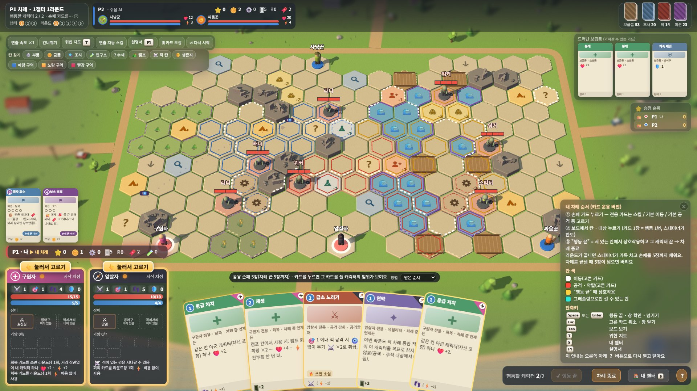

AI PROJECT
느낌이 아니라 숫자와 플레이로 고친 규칙
규칙을 바꾸면 테스트, AI 대전, 직접 플레이를 같은 날 돌려 보고 결정했습니다. 아이디어 하나를 이틀 만에 두 버전으로 만들어 비교한 A/B 테스트도 이 방식으로 진행했습니다.
검증 루프
아래 숫자는 대부분 AI끼리 대전한 결과입니다. AI의 실력 한계가 섞여 있어 정답이 아니라 "어디를 먼저 볼지" 정하는 근거로 쓰고, 직접 플레이한 느낌과 함께 판단했습니다. 사람 대상 플레이 테스트는 다음 단계입니다.
검증 도구
모두 Claude Code가 만들고 실행했고, 결과를 보고 무엇을 고칠지는 직접 정했습니다.
| 도구 | 하는 일 |
|---|---|
| 시나리오 테스트 | "이 상황에서 이 행동을 하면 결과가 이래야 한다"를 312개 적어 두고 규칙을 바꿀 때마다 전부 다시 확인합니다. 규칙서의 예외 문장 하나하나가 시나리오가 됩니다. 카드 132장은 엔진에서 한 장씩 따로 써 보는 전수 테스트도 합니다. |
| AI 대전 보고서 | 보통 AI끼리 150판을 돌려 캐릭터별 승률, 점수 출처 비중, 교전 횟수, 중앙 진출, "할 일이 없던 차례" 비율을 한 장으로 뽑습니다. |
| 처음 하는 AI 테스터 | 코드, 데이터, 규칙서를 볼 수 없게 막은 AI 에이전트가 게임 화면과 설명서만 보고 플레이한 뒤, 첫인상과 막힌 곳을 보고서로 냅니다. 처음 하는 사람이 어디서 헤매는지 미리 보는 용도로 3회 진행했습니다(10.02, 10.03, 10.18). |
| 화면 조작 QA 봇 | 카드 102장을 봇이 실제 마우스로 하나씩 써 봅니다(손패, 가방, 공격 창, 반응 창). 두 화면 크기(1536×864, 1366×657)에서 통과 94, 해당 없음 8, 실패 0이고 한 번에 약 8분 걸립니다. |
| 화면 크기 점검 | 봇이 한 판씩 자동으로 진행하며 버튼이 가려지거나 화면 밖으로 나가거나 글자가 넘치는지 검사합니다. 1920×1080부터 1366×657까지 5가지 크기에서 문제 0건입니다. |
숫자로 바꾼 규칙
문제를 느끼면 먼저 숫자로 확인하고, 안을 여러 개 돌려 본 뒤 결정했습니다.
한 캐릭터만 움직이는 차례
- 문제
- 차례마다 행동 4번을 아무 캐릭터에게나 쓸 수 있어서 한 캐릭터만 계속 움직이게 됐습니다 (직접 플레이 소감).
- 근거
- AI 90판에서 한 캐릭터만 움직인 차례 73%
- 결정
- 캐릭터마다 행동 2번. 이동력이 낮은 캐릭터가 불리해지는 부작용은 보정을 함께 넣음
- 결과
- 73% → 지금 규칙에서 2%
점수의 61%가 코인
- 문제
- 코인만 모으면 이기는 구조라 미션, 시설, 보스 점수가 의미가 없었습니다.
- 근거
- AI 150판에서 최종 점수 중 코인 비중 61%
- 결정
- 코인 2개 = 1점, 시설 레벨업에 코인 비용
- 결과
- 61% → 40% → 36%. 미션 19%, 시설 22%, 보스 23%와 비슷해짐
위험한 중앙으로 나가게 만들기
- 문제
- 보상이 큰 중앙 지역에 캐릭터가 잘 들어가지 않았습니다.
- 근거
- 중앙 보상을 올리고 이동력 +2까지 해도 큰 맵에서 중앙 지역 진출 13% (AI 120판)
- 결정
- 이동력을 올리면 실물 규칙의 수치가 모두 흔들리므로, 이동력은 그대로 두고 칸 사용량이 많은 영역만 남겨 맵을 줄임
- 결과
- 13% → 18%
처음 보는 플레이어가 막히는 곳
- 문제
- 정식 판을 완성한 뒤, 설명 없이 처음 하는 사람이 어디서 막힐지 알 수 없었습니다.
- 근거
- AI 테스터가 설명서 없이 짧은 판을 끝까지 하고 막힘 22개, 버그 의심 5건을 보고. Claude Code가 화면과 코드로 하나씩 확인해 분류
- 결정
- 제출 전에 할 수 있는 작고 확실한 것부터 고치기
- 결과
- 점수 계산 안내, 첫 차례 안내, 마지막 정비 확인 창 등 11가지 수정


규칙 A/B 테스트: "전부 카드로 하면 더 재미있을까?"
2026년 10월 18일 ~ 19일. 데모 시작 화면의 "규칙 버전"에서 두 버전을 모두 플레이해 볼 수 있습니다.
계기와 방법
기존 규칙(기본 행동 버전)을 플레이하다가 "기본 이동과 공격을 없애고, 모든 행동을 카드로 하면 더 재미있지 않을까?"라는 아이디어가 떠올랐습니다. 규칙을 통째로 바꾸면 비교할 기준이 사라지므로, 지금 규칙은 건드리지 않고 두 버전을 나란히 플레이할 수 있게 만들기로 했습니다. 같은 엔진에서 설정값 한 묶음으로 전환되고, 시작 화면에서 고를 수 있습니다.
비교는 두 가지로 했습니다. 같은 AI로 버전마다 150판씩 돌려 지표를 비교하고, 직접 플레이해 느낌을 확인했습니다. 첫 플레이 소감은 "게임 자체는 카드 운용 버전이 더 재미있는 느낌"이었습니다.


반복 개선
데이터로 고친 예: 한 캐릭터에 카드가 몰린다
카드 운용 버전에서도 한 캐릭터만 움직이는 차례가 31%였습니다. AI 150판에서 캐릭터별로 라운드당 쓴 카드 수를 재 보니, 스테미너(카드를 쓰는 데 드는 자원)가 7~10이라 사실상 한도 역할을 하지 못하고 있었습니다. 많이 쓰는 캐릭터부터 스테미너를 크게 줄였습니다.
| 캐릭터 | 라운드당 카드 | 스테미너 (전 → 후) |
|---|---|---|
| 사냥꾼 | 2.35장 | 7 → 3 |
| 암살자 | 1.96장 | 10 → 4 |
| 싸움꾼 | 1.84장 | 10 → 4 |
| 구원자 | 1.32장 | 8 → 5 |
결과: 한 캐릭터만 움직인 차례 31% → 23% (AI 150판).
지표가 이상할 때 AI부터 의심하기
카드 운용 버전 첫 구현에서 AI가 할 일 없이 차례를 넘기는 비율이 32%였습니다. 규칙 문제로 보기 전에 AI 판단을 확인해 보니, AI가 칸의 가치를 "행동이 2번 이상 남았을 때"만 계산하고 있었습니다. 카드 한 장이 행동 1번인 카드 운용 버전에서는 이동할 이유를 찾지 못한 것입니다. 이 계산을 고친 뒤 32% → 9%(20판)로 줄었고, 그다음에야 규칙 자체를 비교할 수 있었습니다.
지금 두 버전 비교
| 지표 (보통 AI 150판) | 기본 행동 버전 | 카드 운용 버전 (4차) |
|---|---|---|
| 할 일이 없던 차례 | 1% | 12% |
| 한 캐릭터만 움직인 차례 | 2% | 23% |
| 전투가 있던 차례 | 88% | 70% |
| 라운드 끝 중앙 지역에 있던 비율 | 38% | 40% |
AI 지표로는 기본 행동 버전이 아직 고르지만, 직접 플레이한 느낌은 카드 운용 버전이 더 재미있었습니다. AI는 카드 조합을 길게 계획하지 못하므로 이 차이는 사람 플레이 테스트로 확인할 계획입니다.
카드 운용 버전은 실험 중입니다. 카드를 만든 캐릭터 4명만 고를 수 있고, 카드는 초안이며, 게임 안 설명서(F1)는 기본 행동 버전 기준입니다.
AI 결과를 그대로 믿지 않고 기록과 대조하기
- "맞았는데 반격이 나왔다"는 AI 테스터 보고: 규칙 버그로 보였지만, AI 20판의 반응 405번과 반격 70번을 엔진 기록과 대조해 어긋남 0건을 확인했습니다. 원인은 캐릭터 말을 키운 뒤 머리 위 글자가 앞 칸 말에 겹쳐 보인 화면 문제였습니다.
- 브로커가 약하다: 수치를 올리기 전에 카드별 사용 기록을 보니 전용 카드 2장이 손패에서 쓸 수 없는 상태였습니다. 구현을 채우는 것만으로 기대 승률 대비 −14%p에서 −1%p 안팎으로 올라왔습니다.
- 4인 게임이 멈춘다: 비교 실험 중 발견했습니다. 시작 칸 8개에 캐릭터 8명인데 보스가 시작 칸에 서 있으면 마지막 캐릭터를 놓을 곳이 없었습니다. 시작 칸을 적과 보스가 들어올 수 없는 안전 지역으로 정해 해결했습니다.
배운 점과 다음 단계
플레이어블이 있으면 결정이 빨라진다
규칙 아이디어가 나온 날 구현해서, 같은 날 150판 결과와 직접 플레이로 판단할 수 있었습니다. A/B 테스트는 제안부터 네 번의 개선까지 이틀이 걸렸습니다.
AI가 낸 결과는 기록으로 확인한다
버그처럼 보이는 보고와 이상한 지표는 규칙을 고치기 전에 엔진 기록과 AI 판단부터 확인했습니다. 원인이 규칙이 아닌 경우가 여러 번 있었습니다.
구조를 먼저 정하면 기능이 싸진다
규칙과 화면 분리, 행동 데이터, 설정값 전환을 처음에 정해 둔 덕분에 이어 하기와 규칙 A/B 비교를 기존 코드를 거의 건드리지 않고 붙였습니다.
다음 단계
사람 대상 플레이 테스트로 AI 결과와 다른 점을 확인하고 규칙을 확정합니다. 규칙이 확정되면 맵 편집기처럼 카드 관리 툴을 만들어 카드도 직접 수정할 수 있게 합니다. 그다음 검증된 규칙과 데이터를 Godot 엔진으로 옮기고(웹 버전은 검증용), 온라인 멀티플레이와 Steam 출시를 목표로 합니다.